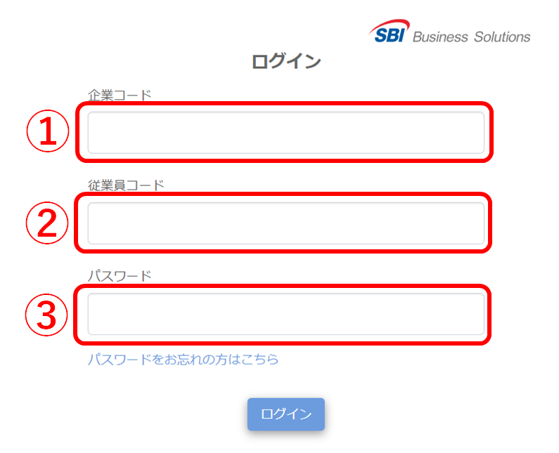
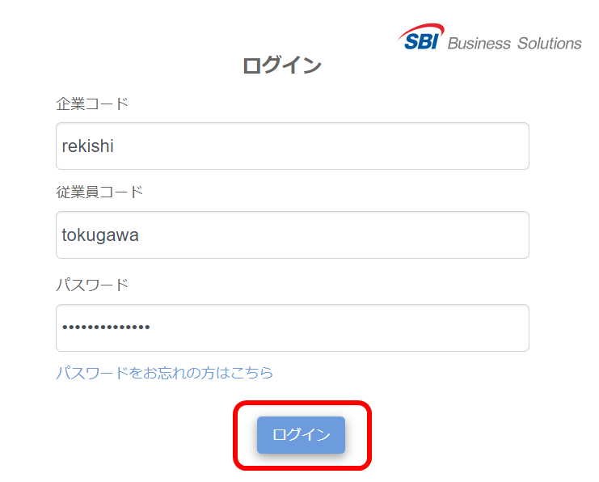
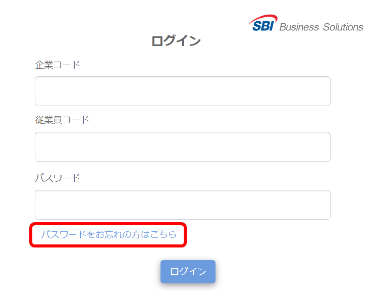
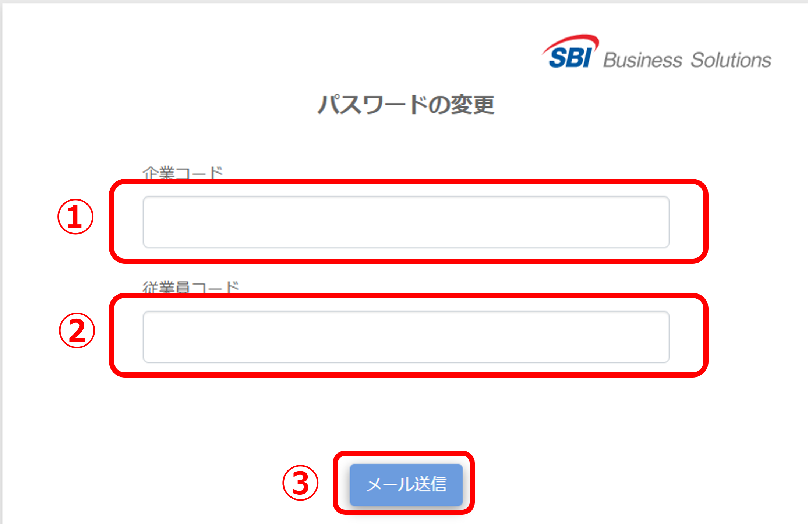
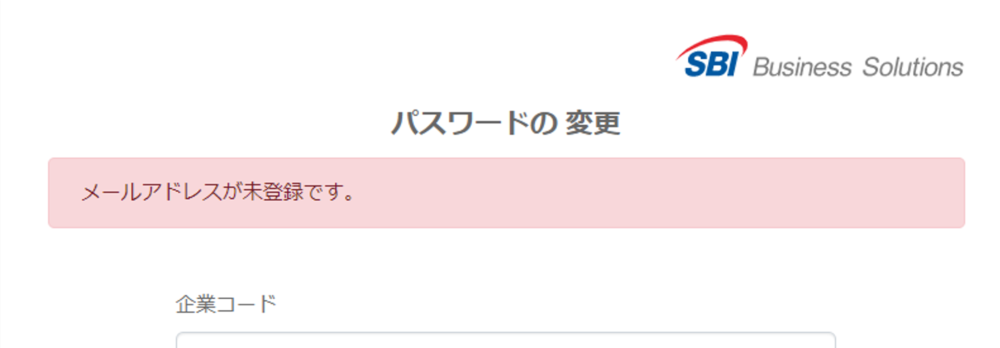
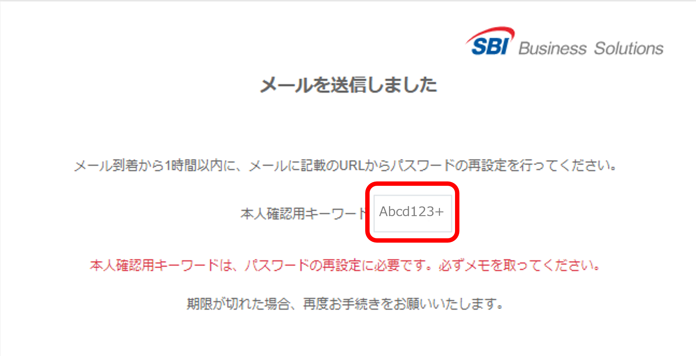
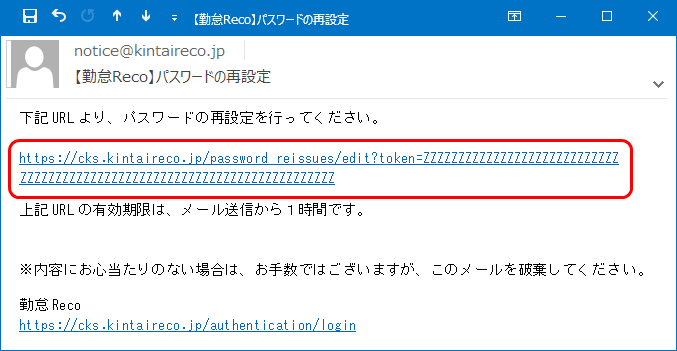
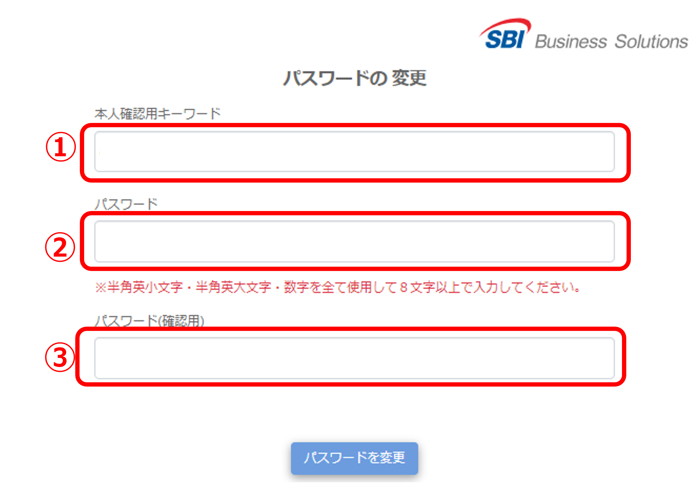
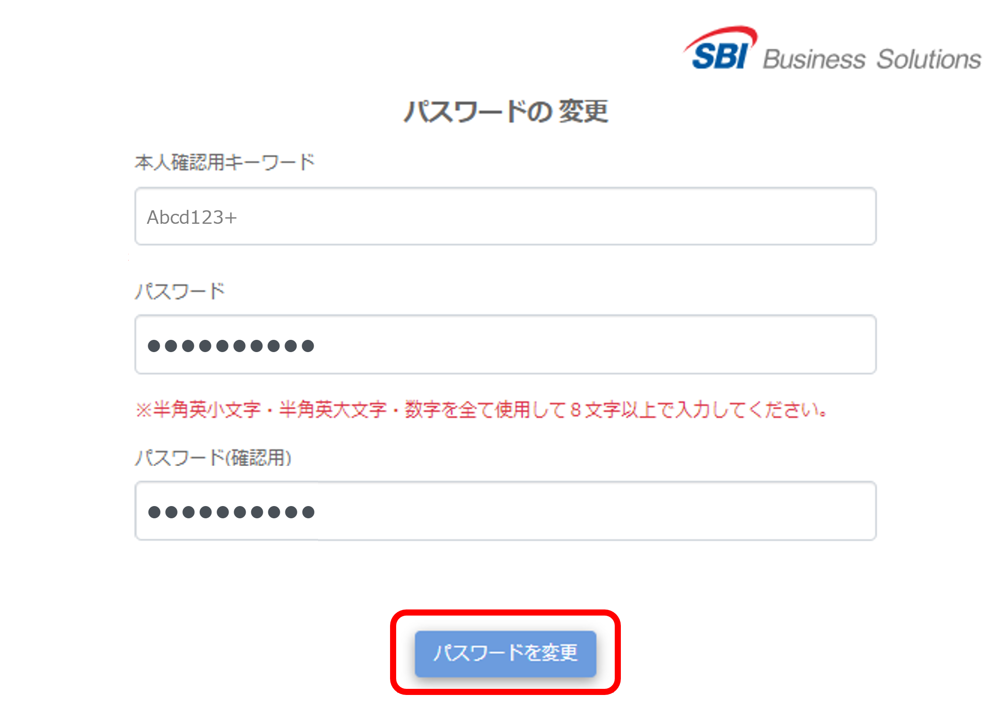

勤怠RECOにログインする
Webブラウザで勤怠RECOにログインする方法を説明します。
-
Webブラウザを起動し、「https://cks.kintaireco.jp/authentication/login」にアクセスする
ログイン画面が表示されます。
-
会社から通知されている企業コード（①）、従業員コード（②）、パスワード（③）を入力する

-
［ログイン］をクリックする

勤怠RECOのトップページが表示されます。
ログインできない時は
ログインに必要な情報が不明な場合は、社内のシステム管理者権限のある担当者に確認してください。
Cookieをブロックしているとログインできません。ログインできない場合はCookieを有効にしてください。
従業員マスタに設定された入社日より前、退社日より後はログインできません。
従業員マスタに設定された最も古い適用開始日より前はログインできません。
一定回数ログインに失敗すると、対象のアカウントはロックされます。解除されるまで10分ほどお待ちいただくか、社内のシステム管理者権限のある担当者に解除を依頼してください。
ログインパスワードを再設定する
パスワードを忘れた場合など、パスワードを変更する方法を説明します。
-
ログイン画面で［パスワードをお忘れの方はこちら］をクリックする

「パスワードの変更」画面が表示されます。
-
「企業コード」と「従業員コード」を入力し、［メール送信］ボタンをクリックする

メールが送信されます。
ご注意 |
「メールアドレスが未登録です。」と表示された場合は、このメニューでのパスワード再設定ができません。社内のシステム管理者権限のある担当者にメールアドレスの登録を依頼してください。
※システム管理者権限アカウントでは、メールアドレスの登録とあわせてパスワードの設定も行うことができます。

|
-
本人確認用キーワードが表示されたらメモを取る

ヒント |
入力間違いを防ぐために、パソコンの機能でコピー＆ペーストすることをおすすめします。 |
-
メールアドレスに届いたURLを開く

ご注意 |
本人確認用キーワードには有効期限（メール到着から1時間）があります。期限内にURLにアクセスし、新パスワードを設定してください。 |
-
手順3でメモを取った「本人確認用キーワード」（①）、新しいパスワード（②）、確認用の新しいパスワード（③）を入力する

ヒント |
手順3で本人確認用キーワードをパソコンの機能でコピーしていた場合は、①にペーストしてください。 |
-
［パスワードを変更］ボタンをクリックする
